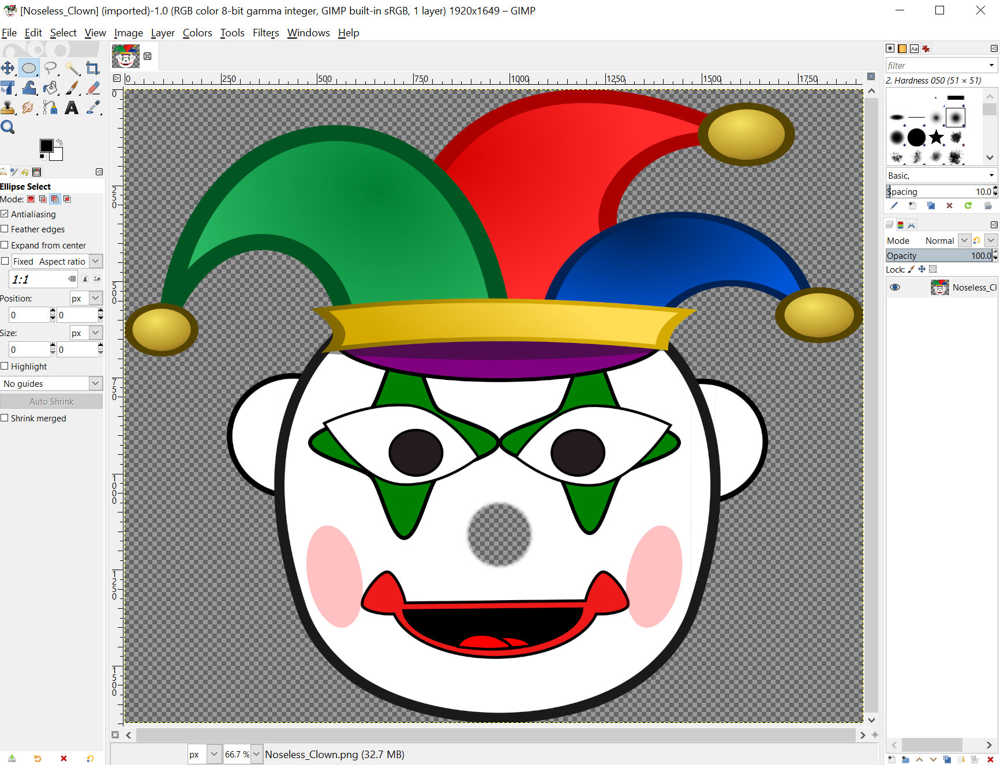

Using Gimp to Understand Image Layers and Transparency
What is GIMP?
Gimp is an image editor, similar to Adobe Photoshop or Affinity Photo. In contrast to Photoshop, GIMP is open-source, free, and available for all three major platforms- Windows, macOS, and Linux.
Where do I get GIMP?
Follow the below link to get the macOS version of GIMP.
https://download.gimp.org/mirror/pub/gimp/v2.10/osx/gimp-2.10.14-x86_64-1.dmg
Gimp sounds kind of advanced. Are you sure we shouldn't use something similar?
You're right, it is! But don't fret: it's perfectly fine if you never use 99.99% of the features of GIMP. In fact, you may never use GIMP at all after this lesson.
However, the concepts we'll go over in this tutorial- transparency and layers- will be invaluable when you need to make even simple graphics modifications in other programs. For example, if you're making a power point, it's common to have to "stack" images. If you understand how layers work, you'll save yourself hours of frustration.
Furthermore, you may find yourself having to crop and scale images. Even if you ignore all of GIMP's other functions, it's a great FREE tool for this.
An Introduction to Image Transparency
All raster images are rectangles. If an images has an irregular (i.e. non-rectangle) shape, what you're actually looking at is a rectangle with a transparency- a see through area- to create the illusion of that shape.
For example, here's an image of a shark.

And here's what that image looks like in GIMP.

GIMP represents transparency with the gray checkerboard pattern. Notice how when you include the checkboard area the image is a rectangle? As far as your browser is concerned, this is true, but the transparent area is invisible to the user.
An Introduction to Layers
Let's take a look at this image of a clown.
Now let's take a look at the same image inside of GIMP. Take note of the transparency around him, and especially in the center where his nose should be.

Note the missing nose- and the transparency that replaces it. Here's what the niose looks like on its own.

Now I'll import it into Gimp, and use the move tool to place it in the correct location.